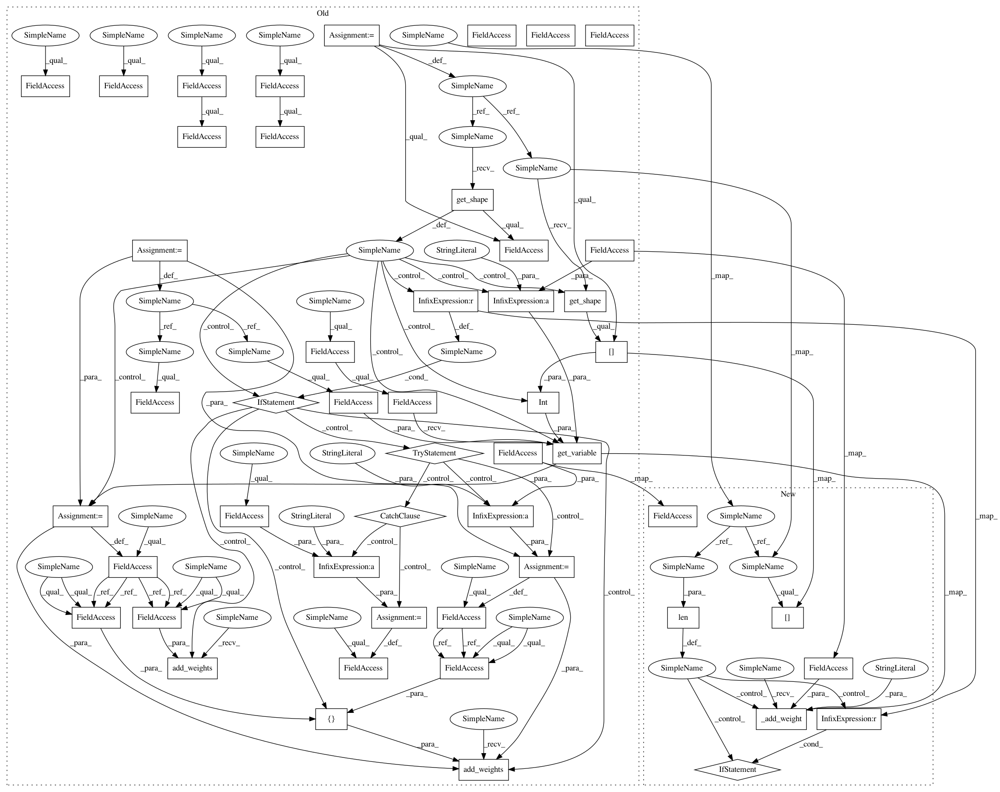

ab50820c352bef9a551ec6349ad73397c1529cf5,tensorlayer/layers/dense/ternary_dense.py,TernaryDense,build,#TernaryDense#Any#,73
Before Change
)
def build(self, inputs):
if inputs.get_shape().ndims != 2:
raise Exception("The input dimension must be rank 2, please reshape or flatten it")
if self.use_gemm:
raise Exception("TODO. The current version use tf.matmul for inferencing.")
n_in = int(inputs.get_shape()[-1])
self.W = tf.compat.v1.get_variable(
name=self.name + "\W", shape=(n_in, self.n_units), initializer=self.W_init, dtype=LayersConfig.tf_dtype,
**self.W_init_args
)
if self.b_init is not None:
try:
self.b = tf.compat.v1.get_variable(
name=self.name + "\b", shape=(self.n_units), initializer=self.b_init, dtype=LayersConfig.tf_dtype,
**self.b_init_args
)
except Exception: // If initializer is a constant, do not specify shape.
self.b = tf.compat.v1.get_variable(
name=self.name + "\b", initializer=self.b_init, dtype=LayersConfig.tf_dtype, **self.b_init_args
)
self.add_weights([self.W, self.b])
else:
self.add_weights(self.W)
def forward(self, inputs):
// W = tl.act.sign(W) // dont update ...
alpha = compute_alpha(self.W)
W_ = ternary_operation(self.W)
After Change
def build(self, inputs_shape):
// if inputs.get_shape().ndims != 2:
if len(inputs_shape) != 2:
raise Exception("The input dimension must be rank 2, please reshape or flatten it")
if self.use_gemm:
raise Exception("TODO. The current version use tf.matmul for inferencing.")
n_in = inputs_shape[-1]
// self.W = tf.compat.v1.get_variable(
// name=self.name + "\W", shape=(n_in, self.n_units), initializer=self.W_init, dtype=LayersConfig.tf_dtype,
// **self.W_init_args
// )
self._add_weight(scope_name=self.name, var_name="weights", shape=(n_in, self.n_units), init=self.W_init, init_args=self.W_init_args)
if self.b_init is not None:
self._add_weight(scope_name=self.name, var_name="biases", shape=(self.n_units), init=self.b_init, init_args=self.b_init_args)
// try:
// self.b = tf.compat.v1.get_variable(
// name=self.name + "\b", shape=(self.n_units), initializer=self.b_init, dtype=LayersConfig.tf_dtype,
// **self.b_init_args
// )
// except Exception: // If initializer is a constant, do not specify shape.
// self.b = tf.compat.v1.get_variable(
// name=self.name + "\b", initializer=self.b_init, dtype=LayersConfig.tf_dtype, **self.b_init_args
// )
// self.add_weights([self.W, self.b])
// else:
// self.add_weights(self.W)
def forward(self, inputs):
// W = tl.act.sign(W) // dont update ...
alpha = compute_alpha(self.weights)
W_ = ternary_operation(self.weights)
In pattern: SUPERPATTERN
Frequency: 3
Non-data size: 50
Instances
Project Name: tensorlayer/tensorlayer
Commit Name: ab50820c352bef9a551ec6349ad73397c1529cf5
Time: 2019-01-15
Author: dhsig552@163.com
File Name: tensorlayer/layers/dense/ternary_dense.py
Class Name: TernaryDense
Method Name: build
Project Name: tensorlayer/tensorlayer
Commit Name: ab50820c352bef9a551ec6349ad73397c1529cf5
Time: 2019-01-15
Author: dhsig552@163.com
File Name: tensorlayer/layers/dense/ternary_dense.py
Class Name: TernaryDense
Method Name: build
Project Name: tensorlayer/tensorlayer
Commit Name: ab50820c352bef9a551ec6349ad73397c1529cf5
Time: 2019-01-15
Author: dhsig552@163.com
File Name: tensorlayer/layers/dense/quan_dense.py
Class Name: QuanDense
Method Name: build
Project Name: tensorlayer/tensorlayer
Commit Name: ab50820c352bef9a551ec6349ad73397c1529cf5
Time: 2019-01-15
Author: dhsig552@163.com
File Name: tensorlayer/layers/dense/dorefa_dense.py
Class Name: DorefaDense
Method Name: build